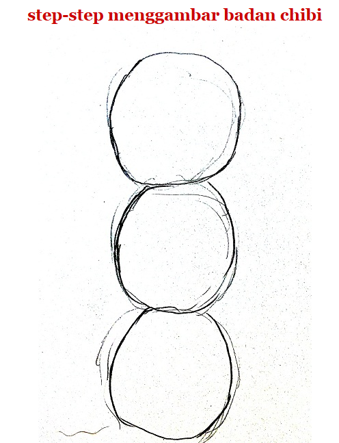
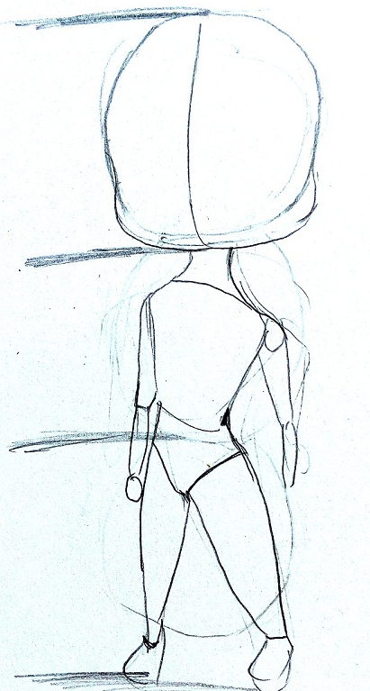
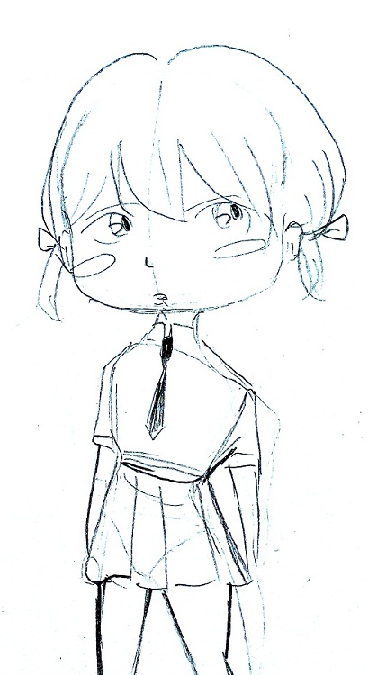

banyak cara dalam menggambar manga kita hanya perlu menggunakan imajinasi kita dan sedikit bantuan rangka dan ini dia cara membuat chibi di manga
pertama anda bisa memulai dengan membuat tiga bulatan sekaligus ini berfunsi untuk membuat kepala,badan,dan kaki.
setelah membuat lingkaran buatlah rangka kepala dan badan seperti rangka manga lainnya hanya bedanya perkecil semua bagian
setelah selesai tebalkan dengan menggunakan pena dan hapus rangkanya
jadilah chibi yang kita mau perlu di perhatikan ketika kita ingin membuat chibi yang lebih kecil lagi kita bisa mengurangi jumlah lingkarannya selamat mencoba